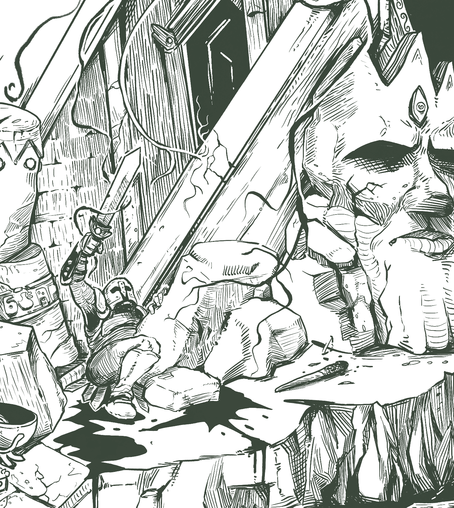
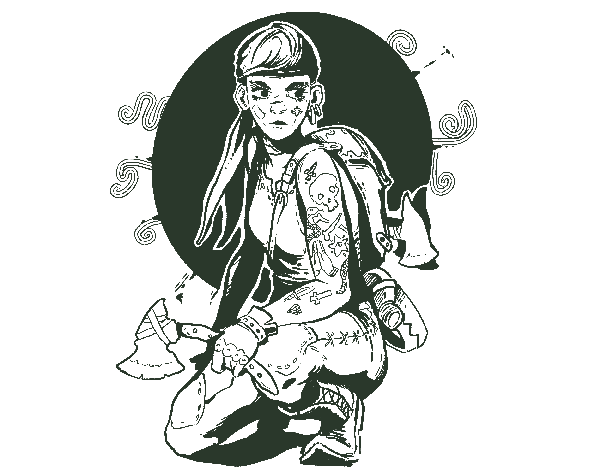
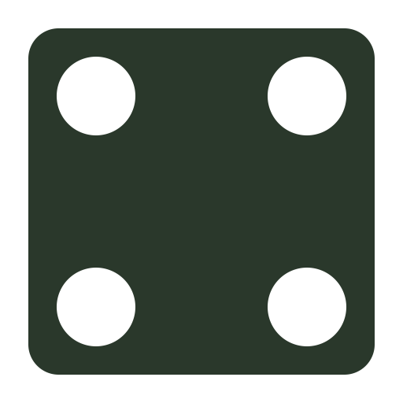
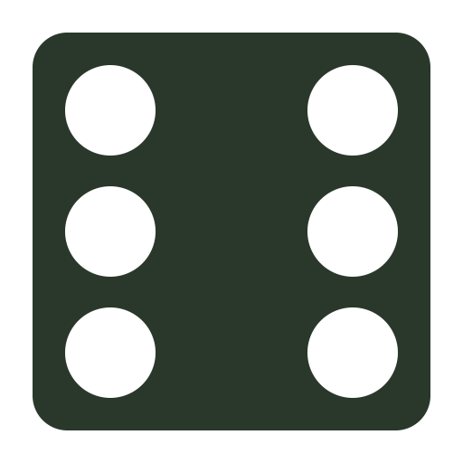
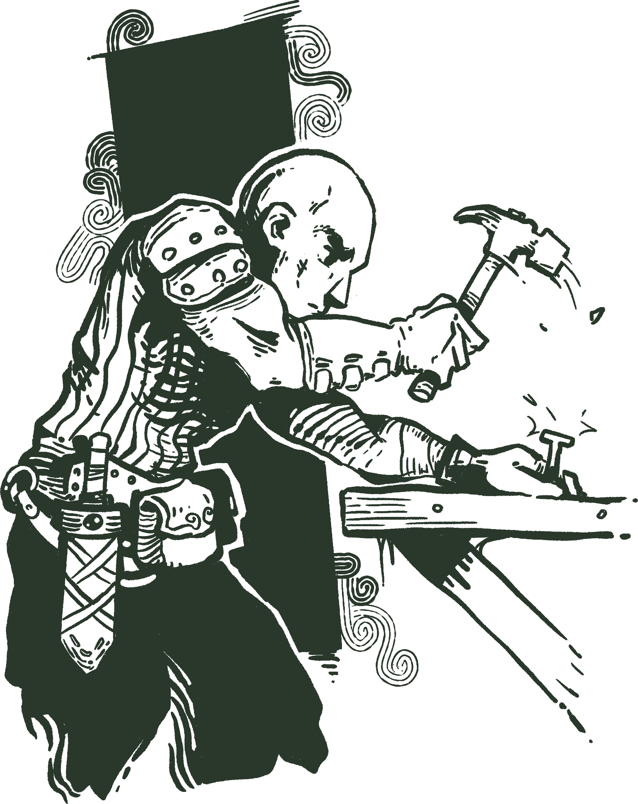

version 0.2

This is a very early work in progress, it's definitely playable, but there's still some content missing. Check the roadmap for more information. If you have questions or any kind of feedback, feel free to also join the discord channel.
Welcome
Dead Weight takes place in a low-fantasy world, it's very grim and dark but doesn't take itself too seriously. But be advised that Dead Weight has some horror elements, and may not be suitable for everyone.
The player characters are no heroes; they are dead weights, outcasts and treasure hunters with little to lose. They delve deep into long forsaken places, struggling not only with the horrors that lurk in there, but also their fatigue, stress, and the gradual decay of the few resources they bring. All to save enough silver to leave Blacksalt Island for better days elsewhere.
This system has a strong structure to it, it's roleplay light focusing heavily on dungeon crawl. Roleplay light doesn't mean there's no support for it, quite the contrary, just means that the game should fun even if your group doesn't like to roleplay a lot.
The goal of Dead Weight is to capture the classic feeling of dungeon crawling tabletop RPGs and board games. It is inspired by many others, borrowing a lot from Blades in the Dark, HeroQuest (the board game), Knave, The Black Hack and Torchbearer.
This system is released under Creative Commons Attribution,you are free to hack, copy, change and even sell works derivative from this system, as long you give proper attribution.
This game was designed and illustrated by me, Pedro Medeiros and if you like what I'm doing, you may consider supporting me on Patreon.

Blacksalt Island
This game takes place in Blacksalt Island, and it's a dreadful place. A once-great kingdom, Blacksalt Island has been ruined by famine, war and plague long, long ago. When things were already dire, the dead vigil started, no one knows exactly why, but every single human that dies in the island rises up as a hungry undead. The island was mostly abandoned for many years, but was recently rediscovered. Treasures and arcane relics found in the tombs sparked a "gold rush" of sorts, with people far and wide venturing there to earn some silver.
Now, the island is divided into dungeoneering guilds, each claiming rights to raid certain ruins. They allow adventurers to explore them and even assist them with supplies, as long as they receive a cut of any treasure found.
Blacksalt island is a big place, with multiple cities on the shore, hastily built for this exploration venture and a few villages on its core. Of the original inhabitants very little is left, but some fief and hamlets still date back to the time of the old kings.
The ruins are filled with the undead, and the newcomers seem to only add to their numbers. Humanoid creatures also live there, mostly hidden in the shadows and in the forests, like the child stealing goblins and the grotesque gnolls.
Unlike many fantasy worlds your character is no hero. Quite on the contrary, you are someone at the end of their line. Maybe your days of glory are long gone and mostly likely they never came. In one way or another, you don't have much to lose - and that's what brings most people to Blacksalt Island.
You arrived in the island hoping to find something, maybe treasure, maybe some lost artifact, maybe a glorious death.
What you will need
Dead Weight is designed with both online and offline play in mind. This rule book has links and a structure optimized for reading online and on mobile, so it's easily accessible to all players. This game is best played with 4 players but you can play with more or less depending on your play style. The system is also designed to be roleplay light, meaning it will be fun even without heavy roleplaying, but, if you group like to roleplay it also supports that, adding a whole new layer to the game.
For simplicity the rules are broken up in different books:
- Core Rules: This book, cover all the important rules and basic information on how to play and create characters.
- Bestiary: A list of monsters and enemies for the adventurers and their respective stats and lore.
- Blacksalt: A lore guide about the island and the world of Blacksalt, gods, settlements and locations.
- Sample Dungeon: Players should NOT read this, only the GM. A sample dungeon for a first adventure.
If you never played a tabletop RPG before, check this video, for a basic explanation.
For online play you will need:
- Some voice and text chatting software like Discord or similar.
- A robust online dice rolling software that allows rerolling, like Dead Dice a dice rolling app I made just for this system, Dead Dice also automate the player's character sheet.
- A virtual tabletop, the simpler the better. I highly recommend Owlbear Rodeo.
- A copy of the character sheet for each player, digital or printed, to the player preference.
For playing offline you will need:
- You can get a print-optimized version of this page too. We provide in two formats A4 and Letter. (work in progress)
- Pen and paper for everyone.
- A copy of the character sheet for each player, digital or printed, to the player preference.
- As many 6-sided dices as you can. Ideally 5 per player. Can be played with fewer dice, but it slows down the game, alternatively the players may use Dead Dice on their phones or tables for a digital sheet.
- Coins, beans, anything that can be used as tokens. There are 3 types of tokens, stun, shield and dodge.
- Miniatures or some kind of pawns. Each player will require one and the GM will require some for the enemies. They should be easily identifiable.
The Basics
Let's go over the basics of the system, after that I recommend that you try to create your first character.
Game Master
One of the players is the game master, in this book we will also abbreviate that to GM. The GM is like a narrator and plays with all the non-player characters, guides the outcomes of the player actions and creates the details of the world.
The game master has game master sheet, just like the players.
Players
Every one else is considered a player. Players will each have a character they will roleplay, they will choose the actions of that character and try to keep them alive and to move towards that characters objectives.
Adventurers
Characters in Dead Weight are people who either lost everything or didn't ever had anything to begin with. Misfits adventurers willing to risk going into the deep vaults of the Blacksalt Island to find precious treasures and artifacts while risking their lives and their sanity. There are no heroes in Blacksalt Island.
Characters will level up between expeditions and eventually retire, if everything goes well. Characters can also find an untimely end by something horrible in the depths of the island.
In this book we will often say adventurers when referring specifically to player characters.
Game Session
This game played in sessions, that can last at least one hour and up to 4 hours, it depends on the play style of your group. Each game session is structured in 2 distinct states, the expedition and the interlude, which is basically delving into a terrible place or recovering and making plans for the next expedition. The players may choose from a list of actions depending on which phase the game currently is. Depending on how much roleplay your group likes the interlude phase may be simplified or not.
Ok, how do I start?
First, decide who will be the game master and who are going to be the players, the game master should ideally read this whole rule book, including the sample dungeon in the end. It is recommended that the players read at least the Core Mechanics after creating the characters, but it's not required. Players should not ready the sample dungeon or they will spoil the adventure.
Then each player should create a character, follow the Character Creation chapter for more information.
The GM should also fill the game master sheet to set the tone of the world. In the end of this book there's a sample dungeon to help the GM get started. The players should not read that section.
After that the adventure starts! It is recommended to start on the expedition, with the adventurers right outside the dungeon entrance, choosing how they will enter. If you want you can also start in a village, or city, that's entirely up to you.
Character Creation

Let's start by creating your character, don't worry too much about the rule system for now, just follow the steps from this chapter and choose what you think sounds more exciting. If you really want to know the rules before doing this, you can skip ahead and come back after you learned the rules.
Every character starts their life with 1 insight point. Insight points can be used to re-roll one or both dice of a life path roll, some life paths will give you more insight. When you complete the last step of your character, you can "move" one attribute score point from one of your highest scores to another for each insight point you have left. When playing with a group, if your character has the same life path as another character in your party, you may, only once, roll again without spending insight.
Each step will add and remove attribute points, equipment, and other things to your character. Place them in the appropriate place in your character sheet.
If you get the same skill twice upgrade it instead. Feel free to jump ahead in to the skills, traits and equipment section to understand what they do.
Print a character sheet or use Dead Dice if you want a digital sheet and let's start! Alternatively you can also try the character generator for an automatic character.
Adventurers have 4 main attributes, they are noted in the character sheet:
- Strength(STR) is physical strength and constitution of a character.
- Dexterity(DEX) is how fast and precise a character is.
- Intelligence(INT) is how intelligent, wise and keen a character is
- Presence(PRE) is how persuasive and strong-willed a character is.
Each attribute has 2 values, the score and the proficiency, the fist one is the natural ability and endurance with that attribute, the other one is how trained the adventurer is with that particular field. In the character sheet, the square area is for the score and the circle is for the proficiency.
All attributes scores start at 1, all attribute proficiencies starts at zero.
Attributes scores can not go lower than 0 or higher than 3 at any point of the character creation, ignore any excess points.
Attribute proficiencies can not go lower than 0 or higher than 2 at any point of the character creation, ignore any excess points.
1. Roll your infancy
Your infancy will provide a base for your attributes and for your formation.
| 2d6 | Infancy | Effect |
|---|---|---|
| 2 | Tossed in the Pit: Rejected by everyone, even by death. | rejected by death (trait), +1 insight |
| 3 | Feral Kid: Raised by animals in the forest. | +1 STR, +1 DEX, animal affinity (skill) |
| 4 | Born in Exile: Raised far away from civilization. | +1 STR +1 INT, survivalist (skill) |
| 5 | Battleborn: Born in a army during a raging war, forged in violence. | +2 STR, fearless (skill) |
| 6 | Street Urchin: Orphan, raised by other kids. | +1 STR, +1 DEX, street wise (skill) |
| 7 | City Kid: Grew up amidst the chaos of a big city. | +1 DEX, +1 PRE, +1d4 silver, +1 insight |
| 8 | Caravan Child: Born in a trading caravan, before walking you learned to haggle. | +2 PRE, +1d6 silver |
| 9 | Clergy Bastard: Born by a sinful union, learned guilt and prayer before walking. | +1 STR +1 PRE, holy rites (skill) |
| 10 | Occultist’s Apprentice: Raised by an occultist and trained in the arcane arts since a kid. | +2 INT, +1d6 silver, occult studies (skill) |
| 11 | Blue Blood: Born in a rich family that eventually lost everything. | +1 INT, +1 PRE, +3d6 silver |
| 12 | Born of a dark prophecy: No one knows where you came from, only that it's bad. | +1 of a chosen attribute prof, bad omens (trait) |
2. Roll your previous career
What you did before coming to the Blacksalt Isle.
| 2d6 | Career | Effect |
|---|---|---|
| 2 | Deserter Knight: To die for honor was never something you aspired to. | +1 STR, +1 STR prof, duelist (skill) |
| 3 | Squire: They said one day you will a a knight. You believed that. | +1 STR, +1 PRE, shield master (skill) |
| 4 | Physician: Not many people knows how to actually heal someone, you do. | +1 INT, +1 DEX, surgeon(skill), |
| 5 | Temple worker: You worked hard in the temples, body and mind. | +1 INT, +1 STR, holy rites (skill) |
| 6 | Charlatan: Outsmarting and taking advantage was your specialty. | +1 INT, +1 PRE, 3d6 silver |
| 7 | Brigand: Joined a gang that robs people on the mountains and forests. | +1 DEX, +1 STR, intimidate (skill) |
| 8 | Common Thief: Stealing, lying and hiding. | +1 PRE, +1 DEX, pilfer (skill) |
| 9 | Craftsman: You hands know how to hammer an iron and how to sew leather without you even thinking. | +1 DEX, +1 DEX prof, crafting (skill) |
| 10 | Cook: While there is hungry people you will always have a job. | +1 DEX, +1 INT prof, cook (skill) |
| 11 | Occultist: One that dares to touch the unknown, a magic user. | +1 INT, +1 INT prof, occult studies (skill) |
| 12 | False Prophet: It's hard not to believe in yourself when so many believe in what you say. | +1 PRE, +1 PRE prof, holy rites (skill) |
3. Roll your tragedy
No one chooses raid tombs and the unholy places you delve by choice. Tragedy is what forced you into the horrible path of a tomb raider.
| 2d6 | Tragedy | Effect |
|---|---|---|
| 2 | Forced to work on a circus: The things you've seen behind the curtains changed you forever. | +1 DEX prof, -1 INT |
| 3 | Afflicted by the plague: You had to resort to treatment many would consider... unnatural. | +1 INT prof, -1 STR |
| 4 | A murderous impulse: Something was wrong with you, but you are better now. Unlike yor victims. | +1 DEX prof, -1 PRE |
| 5 | In debt with a loan shark: You got the money that you needed, but it costed more than you expected. | +1 PRE prof, -1 STR |
| 6 | Lost to the night pleasures: One party blended into the next, until the day came and your young years were gone. | +1 PRE prof, -1 INT |
| 7 | Enlisted in a war: Fought in the losing side of a glorious war. | +1 STR prof, -1 INT |
| 8 | Went to jail: By reasons just or unjust, you ended up locked away. | +1 DEX prof, -1 STR |
| 9 | Enslaved: Taken by force and worked endlessly until the day you escaped. | +1 STR prof, -1 DEX |
| 10 | Lost everything in a disaster: Whatever your family had, now lie in ashes. | +1 STR prof, -1 PRE |
| 11 | Lover's revenge: Too many lovers and no honesty. One way or another, they made you regret it. | +1 PRE prof, -1 DEX |
| 12 | Caged by a powerful wizard: You witnessed both enlightenment and madness. | +1 INT prof, -1 PRE |
4. Roll your burden
No one comes to the Blacksalt Isle unburdened. This is why you are here and what do you expect to find. Use this to guide your character's long-term objectives.
| 2d6 | Burden | Inventory |
|---|---|---|
| 2 | Lost everything and everyone: When you have lost everything, Blacksalt can be a fresh start or a quick end. | No starting gold |
| 3 | Plagued loved one: Rumors of a panacea, a cure for all diseases, lies in Blacksalt. | A cursed ring of plague protection |
| 4 | An unexplainable impulse: Something calls you there, when you sleep you see yourself in Blacksalt. | A golden lantern |
| 5 | Revenge: You've been terribly wronged. You will never forgive and never forget. | A list of names, wine |
| 6 | Fame and riches: You are destined to great things, at least that's what you believe. | cape with your coat of arms(+1 AP) |
| 7 | An impossible quest: Your lord sent you on a quest to find something in Blacksalt, you have no chance. | compass and drawing tools |
| 8 | Redemption: You can no longer live with the things you've done, maybe you can redeem yourself in Blacksalt. | Small pouch, ashes of insight |
| 9 | Zealous Fury: Blacksalt must be cleansed of any diabolical presence, no matter the cost. | An exorcism book, holy water |
| 10 | Amnesia: You don't know how you got here, you just woke up here one day, now you are searching for the truth. | A journal in an unknown language, healing tonic |
| 11 | An Heir: Your family is waiting for you, you will come back for them. But first you need to score enough money. | A lock of hair, first aid kit |
| 12 | A Soul Sold: You are going to hell, some say that in the depths of Blacksalt one can reclaim their soul. | Living ashes |
5. Choose your class
Classes will give special skills to your character. Choose one and follow the instructions for each class. After that your character is done!
There are 4 main classes, each class has a specific background that you must also choose. They are all in the Blacksalt book.
Check the skills and traits section to understand what each of your traits and skills do. Make sure to also check how your equipment works on the equipment and items section. You may also spend your gold in equipment and items before the mission starts, but you may not sell items before the first mission.
Warrior

Trained in dealing with violence warriors are the first one in a combat and the last ones out. The warriors can use any armor or weapon.
- Add 1 proficiency points to Strength.
Warrior background
Warriors can come from different backgrounds, dramatically changing their fighting and living style. For your special trait and equipment, you must choose a warrior background:
Combat manoeuvers
Warriors must choose their combat manoeuvers, they can choose 1 from the manoeuver list in their warrior background. During the combat they may use those manoeuvers freely, as many times as they want, as long they have the required actions for them. Manoeuvers requires 1 action and hit targets close, unless specified in its description.
Thief

- Add 1 proficiency points to Dexterity.
- Add the trait cold blooded or dauntless.
- add the skill infiltration
Choose one of the following as your starting equipment:
- A: Bag, 2 short swords (STR 2+1), leather armor (1 AP), climbing tools, stolen golden icon, 1d6 silver coins.
- B: Backpack, dagger (STR 1+3P), reinforced hood and vest (1 AP), lock-picking tools, Ud6 sleeping darts, 3d6 counterfeit coins.
- C: Backpack, Ud10 throwing hatchets (DEX 1X+1), animal bones for crafting, Ud4 trapping kit, cloth tunic, 1d6 silver coins.
Wizard

- Add 1 proficiency points to Intelligence.
- Add the trait magic user.
- Add skill lore master.
School of magic
Choose one of the following as your school of magic:
- Necromancers of Yadar: Sacrificial dagger (STR 1B+1), chalk, poisonous vials, inscribed skull (grimoire and conductor), cloak with mask, 2d6 silver coins.
- Alchemists of the Golden Ridge: Cane (conductor, STR 1+1), alchemic tools, tattered trench coat, old tome (grimoire), trench coat, 3d6 silver coins, 1 gold coin.
- Thaumaturgists of Ravenhome: Quarterstaff (STR 1+1), ornate garments, crystal ball (conductor), scattered notes (grimoire), cloak, 2d6 silver coins.
- Wandering Mystics: Backpack, wand(conductor), wine, holy water, healing tonic, heavy cloak (AP 1), 2d6 silver coins.
- The Awakened: Inscribed gauntlet (conductor, STR 2), ashes of insight, ornate clothes, 1d6 silver coins.
You can choose a different conductor or grimoire, if the GM allows it.
Spells
Wizards must choose a number of spells equal to their intelligence score from the spell list from their school of magic, check the Blacksalt book for that. Write them down in your character sheet under the "spells and prayers" section.
Wizards require a conductor to perform their spells, usually a wand, staff or crystal ball. Conductors help them to channel the magic from the void plane to the real world. While casting a spell without a conductor is possible, it's extremely dangerous. When casting without a conductor, any failure counts as a critical failure
Wizards also need a grimoire to store their spells, without their grimoire they can't study during the interlude or camping phase to remember forgotten spells. In some cases the grimoire and the conductor are the same.
When the expedition starts the player must choose a which spells the adventurer will have memorized. For each intelligence point, one spell can be memorized.
Casting a spell is always guaranteed to work, after the spell effects are resolved the player must do an intelligence test:
- On a success nothing else happens, the spell was cast as intended.
- On a failure the caster forgets the spell.
- On a critical failure roll from the spell mishap table. Keep track of how many mishaps happened during this expedition. Add that number to the dice.
- On a great success you tap into an arcane well. Your next spell will be an automatic success.
| 2d6 + Previous mishaps | Effect |
|---|---|
| 3 | Take 1 fatigue point on intelligence and get the Nauseated affliction. |
| 4 | A loud noise! Advance the doom tracker. |
| 5 | Temporary blindness for 6 exploration turns. |
| 6 | You see a world without you, it's better. You are now with the Shaken affliction. |
| 7 | Summon a lesser demon Close to you. |
| 8 | Everyone Nearby get the Angry affliction, you get the Terrified affliction. |
| 9 | Everyone Nearby starts crying an get the Hopeless affliction. |
| 10 | You and everyone Close have terrible visions and get the Terrified affliction. |
| 11 | Summon a void demon Close to you. |
| 12 | You start bleeding from your eyes, take 1 wound to each attribute and the Bleeding affliction. |
| 13 | You conductor is now destroyed. |
| 14 | You see a giant eye looking at you. Get the Doomed affliction. |
| 15 | Summon a tormentor demon Close to you. |
| 16 | A third eye opens in your forehead, you are now with the Cursed affliction. |
| 17 | You quickly teleport to the void realm and back, all your equipments and items stay there. |
| 18 | Summon a endless horror Nearby. |
Cleric

- Add 1 proficiency points to Presence.
- Add the trait divine mandate.
- Add skill banish undead.
Choose one of the following as your starting equipment:
- A: Flail (STR 2X+2), forbidden scriptures (holy symbol), leather trench coat (1 AP), 3d6 silver coins.
- B: War hammer (STR 1P+3), Ancient talisman (holy symbol), Ud6 flasks of holy water, thick cloak (1 AP), 3d6 silver coins.
- C: Notched whip (DEX 1R+2B), torture equipment, rope, book of sins (holy symbol), tattered cloak, 1d6 coins.
Clerics must choose a god to follow, you can see the list of gods in the Blacksalt book. Clerics must also choose a number of prayers equal to their presence score from the basic prayers list or from their god's prayers. Write them down in your character sheet under the "spells and prayers" section.
Prayers
Clerics require a holy symbol to cast a prayer, that symbol depends on the god that the cleric follows. Casting a prayer without a holy symbol doesn't work, but they are usually easy to improvise.
When the expedition starts the player must choose a which prayers the adventurer will have memorized. For each presence point, one prayer can be memorized. Each prayer may only be used once until the adventurer rests at camp, once a prayer is used it is considered exhausted. Once per expedition, the cleric may do a desperate plea and use on exhausted prayer once.
Casting a prayer is not guaranteed to always work, since the gods can be cruel sometimes. Make a presence test when your adventurer tries to cast prayer:
- On a success the prayer is answered, resolve the effects as usual.
- On a failure the prayer is ignored, don't do anything. Ignored prayers do not exhaust them.
- On a critical failure you have angered your god, it won't answer any prayers until you make a sacrifice.
- On a great success you also receive a miracle, roll from the miracle table.
| 1d6 | Effect |
|---|---|
| 1 | You heal 1d6 wounds of you or someone Nearby. |
| 2 | Get 1d6 points of morale in this combat (or next, if out of combat). |
| 3 | Unexhaust all prayers. |
| 4 | Cure the one of the following afflictions from you or someone Nearby: Hungry, Parched, Bleeding, Nauseated or Cursed. |
| 5 | If you are in combat, all monsters try to flee in fear, if not decrease the doom tracker. |
| 6 | If you are in combat all enemies take 1 wound, if not your group will start the next combat with one shield token on each adventurer. |
Every cleric can choose prayers from the basic prayers and from the prayer list from their god. Check the gods list for the prayers of each specific god.
Basic prayers
- Cure Light Wounds: Heal 2 wounds from a Nearby target. Also removes bleeding.
- Light: Illuminates the current room.
- Create food and water: Creates 1 unit of ration and water.
Core mechanics
Game Structure
A game of Dead Weight runs a bit differently then most tabletop RPGs, it follows a strong structure, with two main states.
The game usually starts on the Expedition, with the adventurers raiding a dungeon or some other terrible place in the Blacksalt Isle.
Dice Notation
Like many tabletop RPGs, Dead Weight uses dice notation to specify when and how you should roll your dice. Most of dice roll are common six-sided dice, unless specified otherwise.
When you see d4, d6, d8, d10, d12 and d20 this is referring to a die of that size, d4 is a four-sized dice and d20 is a twenty-sided dice. Let's review all styles of dice notations we will use through this book:
Adding dice (2d6)
And when you see 3d6 means to roll three six-sided dice and add the result.
Usage dice (Ud8)
Usage dice is a weird but very useful concept. Usage dice are used for tracking how many consumables a character has, like Trowing Daggers(Ud8) has a usage dice of a d8. Every time the consumable is used the usage dice should be rolled, if the result is a 1 or 2, that dice is downgraded to the smallest die in the following chain:
d20 > d12 > d10 > d8 > d6 > d4
If you roll a 1 or 2 on a d4 that item is gone, you just used the last one.
Risk dice (1d!)
We don't use this a lot, but when we do is usually for checking when if something unpredictable will happen. Roll the indicated amount of d6 if any of the dice is 1, that thing happens.
Attribute Tests and Checks
Rolling dice in Dead Weight is a dangerous and strategic activity, in general players want to get away with actions that do not involve testing. Testing is usually exhausting for the characters, and in the dungeons, fatigue is deadlier than most blades. The GM may ask you to perform a test when your character tries to do something something difficult, uncertain and with consequences.
Rolling dice also involves decision making, carefully choosing which dice to reroll is an important part of the game and help your character to take difficult actions with different approaches.
Testing is always done in relation to a character's attribute, for example, trying to break down a door would require a test of strength. To do so players must roll the same amount of dice of the score of the tested attribute. A character with strength score of 3 would have 3 available dices for a strength test. Players may always choose to roll less dice or not to roll at all, failing the test.
The player needs to roll a 4, 5 or 6 in at least one dice to complete the task successfully. If the player rolls more than one 6 on the dice, that's an great success and things go exceptionally well for that character. On the other side, if the player fails and rolls one or more 1 on the dice, that's a critical failure and things go exceptionally bad for that character.

A successful roll example.
A failed roll example.
Beware that if any of the rolled dice is 4 or 1 the player will receive one fatigue point to that attribute, and only one, even if the test succeeded.
A success, but with a fatigue cost.

Rerolling dice is a common thing in Dead Weight. Many things, like character skills and dangerous situations will allow the players and the GM to reroll certain dice. The order of rerolls is always dynamic, players may choose to use their rerolls one by one, react to the GM rerolls and vice-versa. The test is only evaluated when both sides can't or agree not to reroll any more dice.
Here is an example of an attribute test:
Amber wants to climb down a rope, so the GM says that she will require a dexterity test. She has a dexterity score of 4, she decides to roll all 4 dice.
She rolls
Since she rolled a 6 the test is a success. She manages to climb down the rope safely. Unfortunately for Amber, she also rolled a 1 and a 4, since that happened she should receive one fatigue point to her dexterity.
If you are really into statistics, you can check the chance of critical failure, failure, success and great success here and the chance of fatigue here.
Wounds and fatigue
Every time a character receives fatigue points apply it to an attribute.
Each fatigue or wound point that the character has on that attribute reduces the available dices of that attribute by one.
If a character needs to receive a fatigue point and that would make the available dices of that attribute lower than zero convert convert one fatigue into a wound to that attribute, that wound can not be reduced by armor and other resistances. Read Receiving Wounds for more information.
Proficiency
Players may reroll a number of dice if they have proficiency on that attribute. For example a character with 2 points in intelligence proficiency can reroll 2 dice when testing for intelligence. Players may choose to use their proficiency dice one at the time.
If you choose to reroll a dice you must use the new result, even if it's worse in any way.
Having a high attribute score is always good, but having proficiency is where things get interesting in Dead Weight. The rerolls usually makes for interesting and difficult decisions.
Keeping it Safe
If the player doesn't want to risk fatigue they can reduce their roll by 2 dice. If they do, rolling 1 or 4 will no longer exhaust the attribute, unless the test fails. This must be announced before the dice are rolled. You cannot use extra effort when you are keeping it safe.

Receiving Help
Characters can help each other with a task, if they choose to do so. The player must explain how their character is helping the other in a way that makes sense for the action. The GM and the rest of the table must agree that the situation is plausible. This must be announced before the dice are rolled.
A character can only receive the help from one other character, unless the GM specifies otherwise. The helping character should roll one dice, that dice will contribute the main roll. If the helping character has a proficiency on that attribute they can use it to reroll that dice. The character performing the main roll may change that dice in any way.
Note that any fatigue generated by that dice should be received by the helping character only.
Negative consequences of a failed task are also suffered by the helping character, where applicable, but not the fatigue rolled by the main character.
Extra Effort
If the player really wants to succeed it is possible to add one more dice to the available dices pool by causing the character one fatigue point before the roll, as long the player announces that before rolling the dice. A character cannot spend fatigue if it would cause the character to receive a wound as consequence of doing so.
Players may use extra effort after rolling the dice.
If the player is already going for the extra effort rolling 1 and 4 will not cause fatigue, since it's already receiving that point.
Helping characters can also use the extra effort rule, rolling two dice instead of one, as long as they announce that before rolling.
Lessons Learned
Every time a test fails the player can mark one of the circles below the attribute. When in the interlude that character can use those points to level up that attribute. Read more about it on the interlude.
(This mechanic is not done yet, but it's in the roadmap.)
Zero Dice?
If you for any reason need to roll zero dice, you roll 2 dice instead and keep the lowest number. Rolling less than zero dice is also possible, just keep adding dice, to roll -2 dice just roll 4 dice and choose the worst. I'm pretty sure that test will fail, though, sorry.
For simplicity, the GM may declare a -2 or lower roll to be an automatic failure.
Checks or Tests
Sometimes a rule will call for a check, such as an initiative check. Checks work exactly like tests, except that rolling 1s and 4s on this test do not cause fatigue.
Proficiency can be used normally in checks.
Advantage and Disadvantage
When a test describes a especially easy or hard action the GM may give players an advantage or disadvantage. Many combat actions, and enemy abilities will also add an advantage or disadvantage to tests.
- Advantage allows the player to choose one dice from the test or check to reroll. The new value must be used.
- Disadvantage allows the GM to choose one dice from the test or check to reroll. The new value must be used.
The players or GM may always choose not to reroll a dice for advantage or disadvantage respectively.
Advantage and disadvantage will nullify each other if for any reason a test would have both, they also can stack, having advantage or disadvantage multiple times will allow the players or GM to reroll multiple dice.
The GM must announce that the test has advantage and disadvantage before the dice have been rolled.
Receiving Wounds
Characters will often receive wounds from various sources. Most wounds can be reduced, usually by armor or some character traits. Wounds received by fatigue cannot be reduced.
Armor
Making an armor roll is a bit different than making a test.
To use armor roll one dice per armor point, for each 4, 5, 6 reduce the damage by one. For each 1 or 4 rolled that armor is damage and will lose 1 armor point until it's repaired. Players may always choose to roll less or no armor dice.
If the adventurer is wearing multiple pieces of armor, like a helmet and a vest, only one piece of armor can be used to defend each attack. The player chooses which piece to use.
Zael just received 2 wounds from an arrow and decides to use his reinforced leather armor(2 armor points) to 2 dice. The new results are 1 and 6, which reduces the damage to only 1 wound, but the armor is damaged and now has only 1 armor point until it's repaired.
Placing wounds
When receiving wounds you must choose one or more attributes to place them. If that attribute already have fatigue points, you may convert those to wounds when placing each point.
Zael now just received 3 wounds from an sword attack and managed to reduce it to 2 wounds using armor. After some consideration he decides to place that damage to the presence attribute, which already had 2 fatigue, that fatigue is now converted to wounds.
Attributes can't hold more wounds than their score.
Sometimes a rule will force the player to place the wounds in a specific attribute. If the specified attribute can't hold that many wounds, ignore the excess and the character will immediately collapse and faint. A common example for this is when receiving fatigue on an attribute that's already filled with wounds, this would make the character break down from exhaustion.
If no attribute that can hold any more wounds, meaning that all available dice have been reduced to zero, and another wound must be placed, that character gets mortally wounded. Most wounds are considered lethal, but sometimes a character will receive a non-lethal wound. When that happens a character will not be mortally wounded when receiving that damage, all excess points will just be discarded.
Mortally wounded characters don’t die immediately, they cannot take any actions and must be stabilized by someone after the combat. If a mortally wounded character receives any more damage that character will die.
Enemies don't have attributes, so there's no need to choose where to place the wounds when receiving them. Enemies die when receive more wounds than noted in their enemy sheet.
If the received wounds is reduced to zero or less by armor or other resistances, that character doesn't take any wounds.
Movement & Distance
Most weapons, skills, spells and items will have a maximum or minimum range to work, to make things simple we can use some abbreviations, instead of listing the numbers every time. There are 4 range bands for measuring distance in Dead Weight:
Close, Nearby, Far and Distant.
When using a grid map, here's how you can convert distances":
| Distance | Meters | Squares |
|---|---|---|
| Close | 1.5m | 1 square, no diagonal |
| Nearby | 7.5m | 5 squares |
| Far | 20m | 12 squares |
| Distant | more than 20m | 12 squares |
Trackers
Also known as a progress clock in other systems. A tracker is just one or more circles divided into segments that the GM uses to track the progression of something. Every time a tracker is advanced one segment must be filled. When the circle is completely filled, the tracker is triggered and something happens. There are 3 main trackers that are always in play:
- Decay tracker: Represents the toll that dungeon delving takes on the adventurers. Causes hunger, exhaustion and other bad things to the players. Advances every turn.
- Doom tracker: There's one for each dungeon, represents the dungeon "waking up" to the adventurers' presence and reacting.
- Omens tracker: There's one for the whole campaign. Represents the adventurers' terrible luck and their inevitable doom in Blacksalt island. Every time it gets completed something really bad happens.
The Playing the Game book explains in more detail how each of these trackers work, so don't worry about them for now.
The GM can also create more trackers at any moment, to represent long challenges, the tide rising, a strong enemy slowly waking up and so on. Trackers can be hidden from the players or fully visible.
The Character
Attributes
Character attributes in Dead Weight specify how good your character is at something.
Attributes have two numbers, the score, that measure your character endurance and natural talent with that attribute and the proficiency, measuring how well trained your character is at that. Every character has 4 attributes.
- Strength (STR) is physical strength and constitution of a character. It also influences how many items a character can carry.
- Dexterity (DEX) is how fast and precise a character is. It is used mostly in ranged attacks, initiative, dodging and in a variety of tests.
- Intelligence (INT) is how intelligent and wise a character is. It also influences how many spells a character can memorize.
- Presence (PRE) is how persuasive and strong-willed a character is. It also influences how many prayers a character can memorize.
Skills
Skills mainly give your character extra abilities to use during the expedition and interlude. But they can also be extremely valuable for gathering information and interacting with the world. With the loremaster skill, for example the GM may give you extra information on the dungeon history, or with the ritualist skill the GM might tell you how remove a curse you got. Skills are a good opportunity for the GM and players to exercise their creativity well coming up with stories.
Some skills can be upgraded, remove the previous skill before learning the advanced one so it only occupies one slot. They are the ones indented, for clarity. You must always learn the basic skill before the advanced one.

- Animal Affinity: You have advantage when testing for anything that involves taming, understanding or tracking wild animals. You have a small pet that follows you around (weak ally).
- Beastmaster:(advanced) You have advantage for anything that involves fighting, taming, understanding or tracking animals. You have a pet that follows you around (medium ally).
- Banish Undead: Perform a presence test, on a success any undead nearby that can see you, level 4 or lower must spend one action moving at least 1 step away from you.
- Cooking: Each ration can feed an extra adventurer in the camp phase. You get 1 free ration at the start of the interlude.
- Master Chef:(advanced) Each ration can feed two extra adventurers in the camp phase. You get 3 free ration at the start of the interlude.
- Crafting: You have advantage when testing for crafting things. During the camp phase you can repair 2 points of armor automatically.
- Duelist: You may perform a feint action in combat (1 action). Discard all shield and dodge tokens from your enemy.
- Swashbuckler:(advanced) If your feint removes a shield token, your opponent may not attack next turn.
- Fearless: Once per combat you may heal one presence wound.
- Holy Rites: You have advantage when testing for anything that involves religious rituals, including performing prayers.
- Infiltration: Allows the search for traps action during expeditions and an advantage when sneaking.
- Intimidate: You may perform an intimidate action in combat (2 actions), attacking with PRE 1N all nearby enemies. Only one intimidate action can be used per combat.
- Loremaster: Get advantage when testing or checking for anything related to the world lore, ancient languages.
- Pilfer: You earn 1d6 silver coins at the start of the interlude.
- Occult Studies: You have advantage point for anything that involves magic and the occult, including invoking spells.
- Ritualist: During camp you can spend 1 action to remove one point the omens tracker or doom tracker.
- Shield master: Add 1 extra shield token when defending.
- Aegis:(advanced) Add 2 extra shield token when defending. Allies in the same position may use your shield tokens when defending.
- Stalker: Before combat, if undetected by an enemy you have a free critical hit.
- Street Wise: You do not get robbed in the interlude and you have one extra daily action. You may reduce the price of common items by 1 silver (to a minimum of 1).
- Surgeon: During the camp phase you may perform an Intelligence test to heal one wound of each character in your group.
- Survivalist: 1 extra proficiency point for anything that involves surviving in the wilderness. Adds 1 extra camp action.
- Veteran: (1 explorer action) Test presence, on a success you will know how much doom this location currently has and how much doom is required to trigger the next step.
Weapon and armor use depends on the character arsenal skill. Using an equipment without the proper skill all tests you make are made with disadvantage.
- Weapon master: Can use any weapon or armor.
- Basic weapon training: Can use one handed melee weapons, any staves, any ranged weapons and leather armor.
- No weapon training: Can use only small one handed weapons, any staves and no armor.

Special Traits
Special traits are similar to skills, but usually add or break a rule to your character.
- Berserker: During combat, ignore strength fatigue and wounds when rolling tests. You still take wounds and fatigue normally, and so your character will collapse in exhaustion if your available dices go lower than zero.
- Bad omens: Every time you have a critical fail on a test, advance the omens tracker.
- Battle trance: Every time you kill an enemy you get an extra action.
- Cold blood: You may back-stab enemies that are engaged in combat to another character or distracted, for that you may use Dexterity to hit with weapons that would require Strength. Enemies can't use resistance to reduce your damage and you cause one extra wound.
- Divine mandate: You may cast prayers. You require a holy symbol and to have previously memorized them. Check the prayers section for more information.
- Hardened: When receiving wounds from an attack, you may test strength, on a success, resist 1 wound. On a great success resist 2 wounds.
- Magic user: You may invoke spells. You require a magic conductor and to have previously memorized them. Check the spells section for more information.
- Rejected by death: If your character would get mortally wounded, roll 2d!, if triggered, ignore the mortal wound.
- Dauntless: When you get a success on a test, you may roll 2 extra dice and add them to this test. This increases your great success and fatigue chance.
- Third eye: You can see the omens tracker.
Afflictions
Each one of the afflictions have their own set of rules on how they affect the character and how they are removed. If an adventurer would receive an affliction he or she already have, ignore it.
| Afflictions | Getting rid of * | Effect DD |
|---|---|---|
| Hungry | Eating food. | Wounds do not heal. |
| Parched | Drinking water. | Cannot recover fatigue. |
| Bleeding | Use bandages or other form of first aid. | Receive one fatigue point every turn. |
| Sleepy | Camping, coffee or receiving a wound in combat. | Can't use extra effort or help friends on tests. |
| Angry | Drinking a cup of tea or hot chocolate. | Can't reroll your dices with proficiency. |
| Shaken | Resting in the camp phase. | Can't use the Catch Breath action in combat or during exploration. |
| Nauseated | Some potions and tonics. Gets healed during the interlude. | During combat you have one less action. |
| Terrified | Drinking wine or other alcoholic drink or defeat a challenging foe. | Rolling 4 on attribute tests doesn't count as a success. |
| Hopeless | Escaping alive from the dungeon or survive a challenging fight. | Rolling 5 or 6 also causes fatigue. |
| Cursed | Only removed by magic or miracles. | Wounds do not heal by resting. Can see ghosts. |
| Plagued | Only removed by magic or miracles. | Coughs constantly. When receiving fatigue receive a wound instead. |
| Doomed | Only removed by magic or miracles. | When the doom tracker moves, it moves one extra point. |
* Not exclusive, always check item descriptions for more ways to remove afflictions.
Inventory
Characters can carry 5 items + 3 items for each strength score. Items should be placed in your character sheet in the appropriate slots in the Trappings section. While carrying more items is possible the character will be encumbered, all movement is reduced by half and must perform a strength test every turn, failing means that something was dropped.
At the trappings table, on top of each list there's a label, something like "Belt/Small pouch". Circle the one you have on your character, if your character doesn't have any of those, just make a big X on the whole list.
Here's a breakdown of how the adventurers can carry their items.
- A bag carried on the back can carry 4 items, a backpack can carry 7 items.
- A belt can carry 1 item, a small pouch can carry 2 items.
- A canteen can carry 1 liquid item, a skin can carry 2 liquid items.
- Each small bag can carry 3 items.
Unless stated otherwise all characters start with with a belt, canteen and a bag.
When items have a characteristic that makes them awkward or hard to carry, write it bellow the item, with the characteristic occupying one extra slot. Examples of characteristics are oversized, fragile and unstable.
Very small items, like chalk, keys or a dice do not occupy any slots, and should be written down in the notes section of the character sheet.
Caracters may also carry items in their torso and hands slots.
- The torso has 4 slots.
- Each hand has 2 slots.
Equipped armor and helmet go on the torso slots, wielded items, including torches go on the hands. Unless the player has a really good explanation, a character can only wield one item on each hand, even with 2 slots. For just carrying stuff, carrying 2 items on each hand is fine.